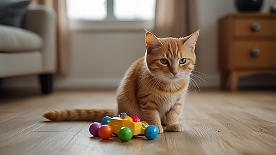

Top 5 Toys to Keep Your Cat Active
Published on August 8, 2025 by Pawvaro Team

Best toys for our lovely Cats
Cats are natural hunters and need regular playtime to stay fit and happy. The right toys will keep them engaged while also preventing boredom.
1. Interactive Wand Toys
These mimic prey movements, keeping your cat’s hunting instincts sharp.
2. Puzzle Feeders
Stimulate your cat’s brain while providing treats or meals.
3. Catnip-Filled Plush Toys
A classic favorite for cats who enjoy rolling, biting, and cuddling.
4. Laser Pointers
Great for exercise, but be sure to let your cat “catch” a toy at the end.
5. Climbing Towers
Encourage climbing and scratching, reducing destructive behavior.